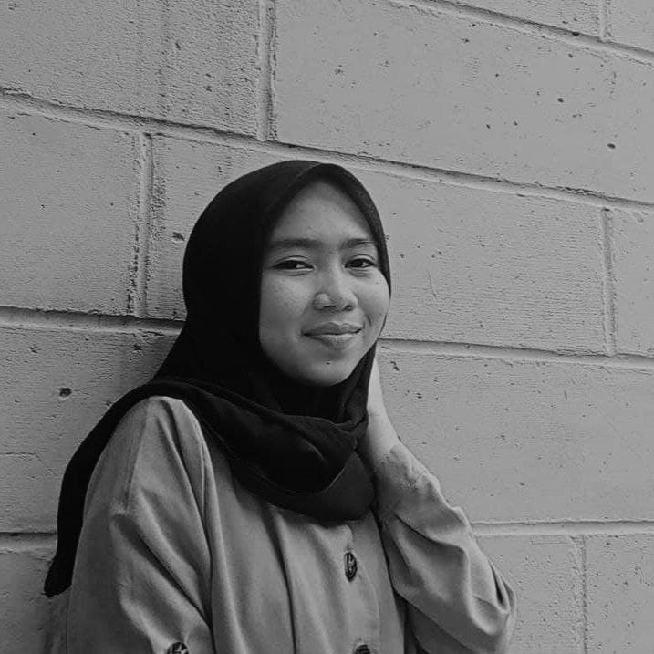

| Nama Panjang: | Fauziyah Nur' Adilah |
| Nama Panggilan: | Fauziyah |
| Tempat, Tanggal Lahir: | Bogor, 15 Maret 2004 |
| Nomor Telepon: | 085773699170 |
| Sekolah: | SMK-SMAK Bogor |
| Hobi: | Menggambar, mendengar musik, menonton film |
| Foto: |  |
Pandemi COVID-19 sekarang ini, sangat meresahkan banyak pelajar seperti saya. Saya tidak bisa belajar seperti biasa di sekolah, tidak bertemu teman-teman saya sudah lebih dari setahun. Pembelajaran jarak jauh kurang lebih sudah dilaksanakan selama 13 bulan. Terdapat beberapa kendala yang saya alami selama mengikuti kegiatan PJJ yang dianjurkan pemerintah. Terkadang saya kehilangan sinyal pada ponsel sehingga harus terpental dari zoom meeting, telat mengisi absen karena ketiduran, dan lain sebagainya. Hal tersebut terkadang membuat saya sedikit stress. Kami para murid SMK-SMAK Bogor harus melaksanakan pembelajaran jarak jauh. Tentunya itu tidak mudah, terutama dalam pembelajaran praktik. Kami tidak dapat mengalami secara langsung, bagaimana cara mentitrasi, menghitung bakteri, menggunakan alat instrumen, dan lain sebagainya. Selain itu, terdapat beberapa mata pelajaran yang sulit dipahami dengan metode pembelajaran jarak jauh, seperti fisika. Namun sekarang Alhamdulillah nya kami diberi kesempatan melaksanakan pengalaman berada di laboratorium salama satu bulan, tentunya dengan prokes yang memadai.
Dibalik semua itu, pada masa pandemi seperti sekarang ini, saya mememukan dan belajar banyak hal baru. Semenjak awal pandemi, saya menemukan hobi baru yaitu menggambar. Akhirnya saya membeli beberapa peralatan menggambar secara online. Selain itu saya juga belajar memasak beberapa makanan yang belum pernah dibuat sebelumnya. Selain itu saya juga jadi mempunyai banyak waktu untuk self-healing. Saya juga merasa jadi lebih banyak waktu bersama keluarga saya di rumah, meskipun terkadang bertengkar dengan adik saya. Jadi hikmahnya, di samping semua tekanan yang saya hadapi, pasti terdapat hikmahnya juga.